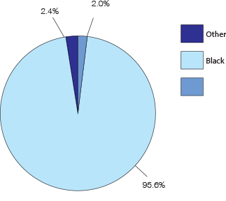

Public Safety and Justice Report by Ward
Ward 7

Lashauntya Moore-Reynolds, resident of Dupont Park, says her family has been exposed to both car theft and prostitution. Her family moved to the neighborhood 5 years ago and encountered a recurring problem of someone trying to break into their car at night. Since that specific incident, Lashauntya says her family hasn’t seen crime in the neighborhood aside from alleged prostitution on nearby street corners.
Graphs & Statistics
Race
Demographic Statistics
- General
- 10% population decrease
- In 2013, the infant mortality per 1,000 live births was highest in Ward 5, Ward 8, and Ward 7
- Income
- $46,717
- 65% of ward residents employed (either full or part time)
- Education
- 82% have a high school degree
- 17% of ward residents have a bachelor's degree or greater
- Poverty
- 40% of children in ward under 18 live in poverty
Crime Statistics
- Violent Crime
- 45% of District-wide violent crime in 2014 (10% increase)
- 28% of increase in violent crime overall
- In 2014: 1,467 offenses reported
- 71% of the District's homicides
- 27% increase in ADW's
- Number of reported ADW's: 631 (more than twice average of 299)
- 22% increase in reported robberies from 2009-2014
- 752 robberies
- 164% increase in Ward 7 in reported sexual offenses (58)
- Property Crime
- 476 burglaries
- 814 MVTs in 2014
- 107% increase overall in property crime